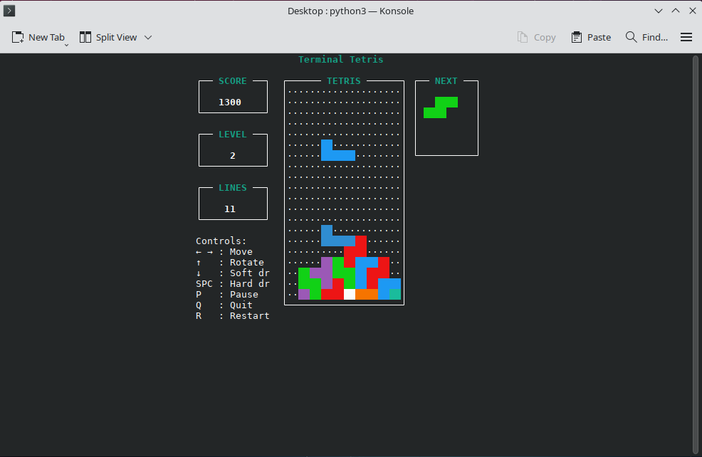

Vibe Coding Tetris for the Terminal
A Small Experiment in AI-Assisted Software Development
A Simple Idea
After experimenting with Claude, I wanted to try another small vibe-coding project. This time I decided to make a version of Tetris that could run directly in the Linux terminal.
Building It with Claude
I described the basic game mechanics and had Claude generate the application. From there I could run the game, identify things that needed improvement, and ask Claude to modify the program.
Because Tetris has relatively straightforward rules, it made a useful test of how well an AI coding assistant could translate a description into a functioning game.
Running the Game
python3 tetris.py

I described the basic game mechanics and had Claude generate the application. From there I could run the game, identify things that needed improvement, and ask Claude to modify the program.
What I Learned
The project reinforced how useful AI-assisted programming can be for small personal projects. The barrier between having an idea and having something functional is becoming remarkably small.
It also demonstrated an important limitation of vibe coding: getting something that works is only the beginning. Refining the controls, handling edge cases, and deciding how the application should behave still requires testing and human direction.